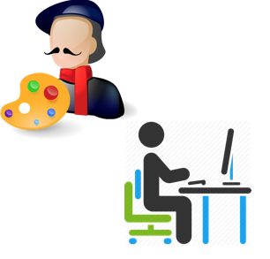

Lập trình front-end, tại sao HOT???
Viết bởi Dang Pho

Trong năm 2016, mức lương trung bình khởi điểm cho 1 lập trình viên front-end có từ 1-3 năm kinh nghiệm là từ $53,000 - $74,750. Với những người kinh nghiệm hơn 3 năm, mức lương trung bình sẽ là từ $72,000 - $100,000.
Với yêu cầu về tính đáp ứng, linh hoạt và thẩm mỹ rất cao của website ngày nay thì công việc của lập trình viên front-end trở nên bức thiết. Không chỉ dừng lại ở kỹ năng lập trình mà còn phải có trí tưởng tượng sáng tạo đầy tính nghệ thuật. Bởi thế, công việc của lập trình viên front-end được ví như những nhà thiết kế nội thất. Đó là lý do tại sao su hướng website ngày nay đặt nặng yêu cầu nhà phát triển web phải rất tài về lập trình front-end.
Con người tài hoa

Ngoài các ngôn ngữ thiết kế web như HTML, CSS,... lập trình viên front-end còn phải biết sử dụng các công cụ thiết kế chuyên nghiệp như Photoshop để tự tay mình thiết kế, chỉnh sửa và cắt ảnh, điều đó nhằm thể hiện sự sáng tạo và linh hoạt về nghệ thuật thẩm mỹ của họ. Bên cạnh đó, để tạo ra tính tương tác và đáp ứng cao cho website, họ phải là một chuyên gia lập trình javascript. Nhưng may mắn, hiện nay có rất nhiều framework, thư viện dựa trên nền tảng javascript để tiết kiệm công sức coding và hiệu quả cao như JQuery, AngularJS, Ember,... Quả thật là một công việc của những người tài hoa.
Hiểu tâm lý người dùng

Không chỉ tài hoa để làm ra website rồi tự kỉ khen, mà họ phải làm sao người dùng trải nghiệm, sử dụng cảm thấy thích thú, tiện lợi và đẹp mắt (user experience). Dễ hiểu sao những desktop application (software trên máy tính để bàn) hiện nay đang chuyển dần sang thành web application (ứng dụng trên website) bởi chính sử trải nghiệm người dùng và tính đáp ứng không thua kém của nó trong khi lợi ích chia sẻ, truy cập không giới hạn và không phụ thuộc hệ điều hành vượt trội. Công việc này cũng cần đến tay anh front-end.
Giao tiếp tốt với đồng nghiệp
Chính vì phải đảm bảo tính thẩm mỹ và trải nghiệm người dùng nên người làm front-end phải giao tiếp với ít nhất 2 team: Design và Business Analysis để đạt yêu cầu công việc. Ngoài ra, họ còn phải giao tiếp với team back-end (lập trình phía server) để có nguồn dữ liệu mong muốn và nhiều thứ linh tinh khác nữa :). Vì vậy, họ là người có được những kỹ năng giao tiếp tuyệt vời.
Được săn đón với mức lương hấp dẫn
Một người tài hoa như vậy, theo bạn có đáng được săn đón không? Chính vì thế trên trang itviec đang ráo riết đăng tuyển vị trí front-end developer với mức lương khủng (Khởi điểm từ $600 - $800 còn có kinh nghiệm từ $1,100 trở lên). Cũng đâu có gì là lạ, khi ta hiểu rõ về công việc và sứ mệnh của cái nghề "Lắm tài, nhiều mưu" này, đó là phần thưởng xứng đáng cho những người chịu theo đuổi đến cùng.
Bạn còn chừng chừ gì nữa mà không nhanh tay Đăng ký để làm chủ front-end cùng với CiOne.vn
Bạn còn chừng chừ gì nữa mà không nhanh tay Đăng ký để làm chủ front-end cùng với CiOne.vn
Xu hướng hiện đại
Khi sự phổ biến của HTML5 ngày càng tăng cộng thêm sự hỗ trợ của trình duyệt và sự phát triển vượt bậc của ngành công nghiệp web, các ứng dụng truyền thống như Word, Excel,... được chuyển dần sang các ứng dụng trên nền web tương đương như là Google Docs, Google Work Sheets,... Thay vì phải có những thiết kế các nhau cho mỗi thiết bị khác nhau như trước lập trình viên có thể cho các trình duyệt web xử lý các chức năng di động cụ thể hoàn toàn dựa vào sự linh hoạt của HTML5 (Cũng như HTML phiên bảnt trước đó) là có thể làm việc trên tất cả nền tảng trình duyệt web.